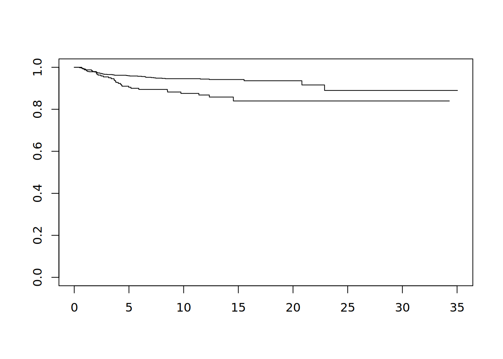
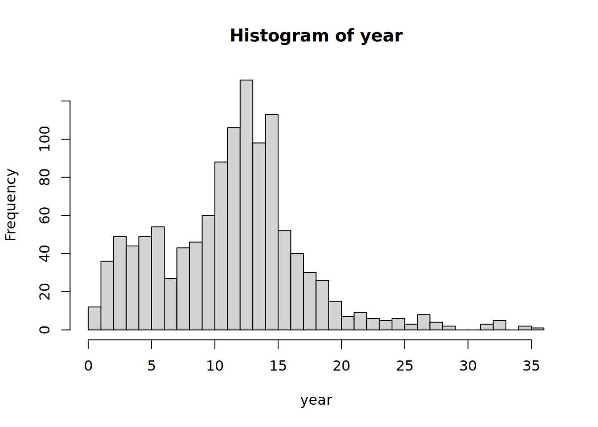
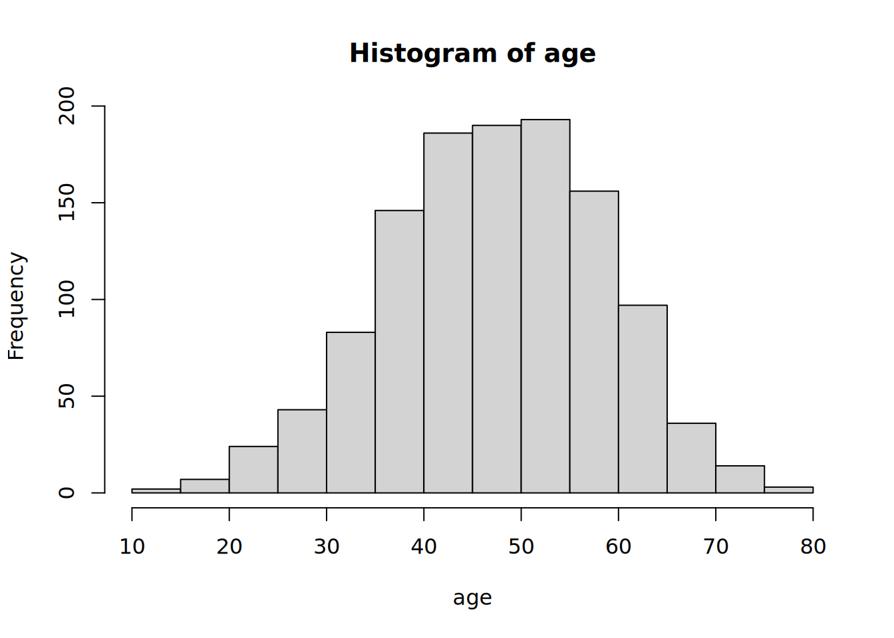
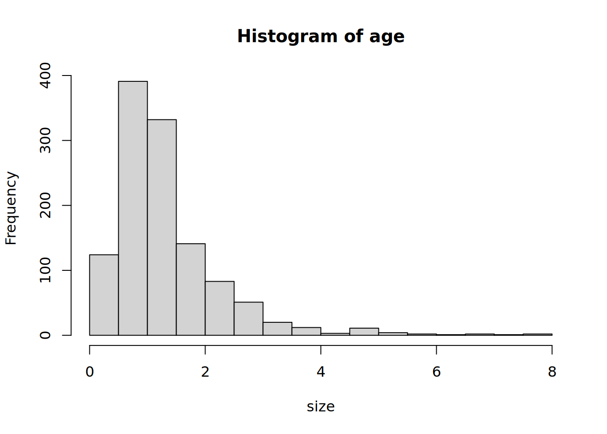
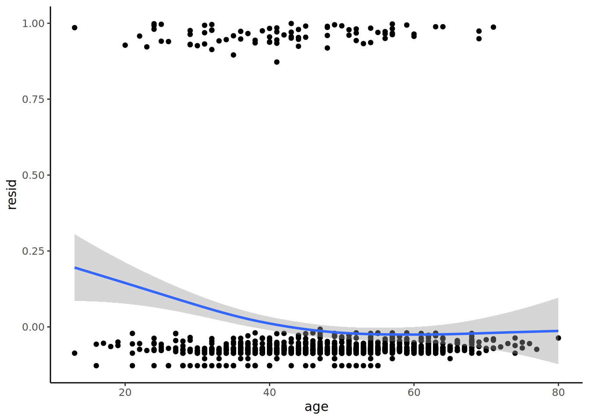
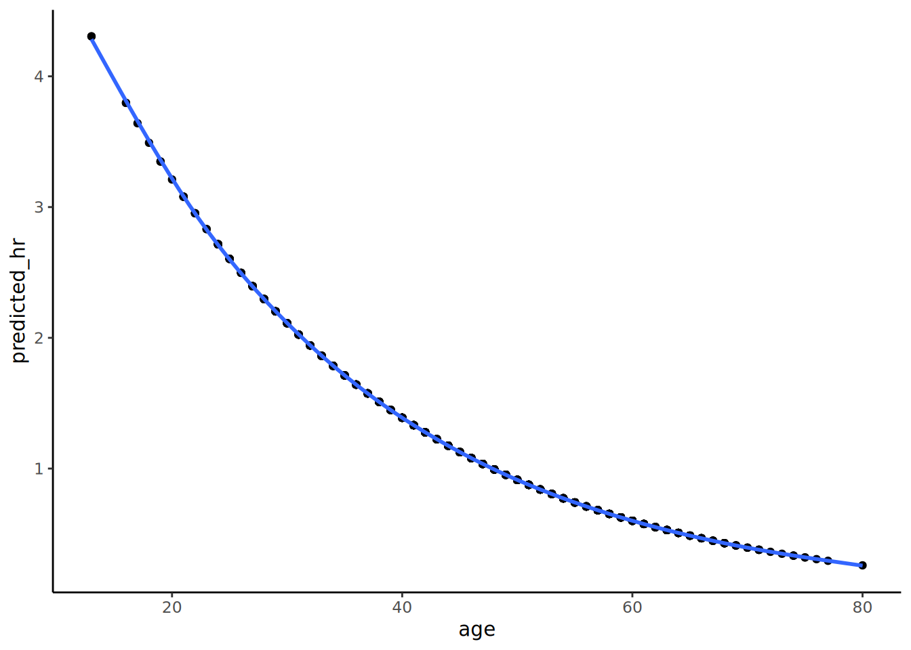

RStudio Terminal
git clone https://github.com/RPythonGroup/Survival_Exercise.git R443-Survival_Exercise실제데이터를 가지고 생존분석 단계별 진행과정을 따라할 수 있도록 Quarto 프로젝트를 만들었고 연구회의 Github 원격저장소(repository)에 올려두었습니다. 실습을 위해서는 로컬인 자신의 PC로 원격저장소의 프로젝트 파일들을 cloning(=다운로드)하셔야 합니다.
Cloning을 위해서는 (R과 RStudio만 있는 것이 아니라) Git도 설치되어 있어야 합니다. 혹시라도 나중에 합류한 회원분들 중 Git 등의 설치가 안되어 있으면 연구회 웹사이트의 해당부분을 참고하여 설치해 두시기 바랍니다.
Git을 이용한 clone은 마치 새로운 프로젝트를 만드는 것과 같습니다. 그래서 Rstudio에서 모든 프로젝트들은 닫은 상태에서 진행하시는 것이 바람직합니다. 윈도우 운영체제에서는 RStudio에서 모든 프로젝트를 다 닫는다면 default working directory상에 RStudio가 열려있게 됩니다. 연구회에서는 default working directory를 - 윈도우의 경우 C:\Projects\ - WSL2 Ubuntu의 경우 로 미리 지정하는 것으로 추천드렸습니다.
이 상태에서 RStudio Console pane, Terminal tab에서 다음을 실행하면 cloning이 됩니다. 이 때 설치폴더를 아래와 같이 지정하게 됩니다.
RStudio Terminal
git clone https://github.com/RPythonGroup/Survival_Exercise.git R443-Survival_ExerciseCloning이 성공적으로 완료되면 RStudio Output pane, File tab에서 R443-Survival_Exercise 폴더가 만들어지게 됩니다.
이 상태는 아직 RStudio에서 프로젝트로 인식하지 못하고 있는 상태입니다. 이제 RStudio에서 이 폴더를 프로젝트로 인식하게끔 해야 합니다. 이를 위해서는 RStudio에서 File tab에서 New Project를 선택하고, 새로운 디렉토리가 아닌 기존의 디렉토리를 선택하여 프로젝트 만들기를 진행하면, 새로운 프로젝트의 working directory를 선택하라고 하는데 이때, cloning된 디렉토리를 선택하면 cloning된 디렉토리가 RStudio에서 프로젝트로 인식되게 됩니다.
R로 진행하는 프로젝트에서 package를 독립적으로 관리하기 위해서 연구회에서는 renv 사용을 추천하고 있으며 clone한 프로젝트도 역시 renv로 관리되고 있습니다. 하지만 clone된 상태에서는 renv가 아직 활성화가 되지 않았으므로 아래와 같이 활성화를 먼저 실행합니다.
RStudio Console
renv::activate()만약에 renv package가 설치되어 있지 않다면, 아래와 같이 설치를 먼저 진행합니다.
RStudio Console
install.packages("renv")적절한 renv::activate 옵션을 선택한 후 진행하면 프로젝트 working directory 하부에 renv 디렉토리가 만들어집니다. 원격저장소의 R 버전이 R-4.4.3이고 local에 설치된 R이 4.1.2라면 renv.lock 파일을 열어서 R 버전을 4.1.2로 수정하고 아래와 같이 restore를 실행합니다.
RStudio Console
renv::restore()이번 실습에서는 R에서만 사용하는 자료형태인 RDS를 읽어오도록 하겠습니다. 이는 csv 파일이나 엑셀형태의 자료에 비해 자료형이 그대로 보전되고 읽어오는 속도가 더 빠릅니다.
library(dplyr)
Attaching package: 'dplyr'The following objects are masked from 'package:stats':
filter, lagThe following objects are masked from 'package:base':
intersect, setdiff, setequal, unionrai_recur <- readRDS("deidentified_data/rai_recur.rds")여러가지 방법이 있겠지만 문건웅선생님의 moonBook 패키지를 이용하여 mytable로 개요를 파악하고자 합니다.
library(moonBook)
mytable(recur~.,data=rai_recur)
Descriptive Statistics by 'recur'
———————————————————————————————————————————————————————————————————————————
FALSE TRUE p
(N=1097) (N=83)
———————————————————————————————————————————————————————————————————————————
pt_id unique values:1179 unique values:1179
age 48.2 ± 10.9 42.4 ± 12.5 0.000
sex 0.001
- F 881 (80.3%) 53 (63.9%)
- M 216 (19.7%) 30 (36.1%)
op_year 2012.2 ± 5.4 2008.6 ± 6.2 0.000
surgeon 0.000
- CIJ 72 ( 6.6%) 1 ( 1.2%)
- GS 19 ( 1.7%) 3 ( 3.6%)
- KCCH 61 ( 5.6%) 2 ( 2.4%)
- LBC 104 ( 9.5%) 6 ( 7.2%)
- LGH 447 (40.7%) 29 (34.9%)
- LMC 226 (20.6%) 8 ( 9.6%)
- LYS 25 ( 2.3%) 5 ( 6.0%)
- OKK 4 ( 0.4%) 2 ( 2.4%)
- outside 63 ( 5.7%) 23 (27.7%)
- SYS 76 ( 6.9%) 4 ( 4.8%)
Thyroidectomy_Type 0.551
- Lobectomy_Completion 64 ( 5.8%) 3 ( 3.6%)
- TT 1033 (94.2%) 80 (96.4%)
ND_Type 0.001
- CND 833 (75.9%) 45 (54.2%)
- FND 9 ( 0.8%) 2 ( 2.4%)
- mRND 2 ( 0.2%) 1 ( 1.2%)
- ND 76 ( 6.9%) 10 (12.0%)
- Not Done 37 ( 3.4%) 4 ( 4.8%)
- Picking 7 ( 0.6%) 1 ( 1.2%)
- SND 133 (12.1%) 20 (24.1%)
Risk 0.000
- High 178 (16.2%) 34 (41.0%)
- Intermediate 535 (48.8%) 43 (51.8%)
- Low 384 (35.0%) 6 ( 7.2%)
histology 0.264
- FTC 24 ( 2.2%) 0 ( 0.0%)
- HTC 2 ( 0.2%) 1 ( 1.2%)
- Mixed 1 ( 0.1%) 0 ( 0.0%)
- PDTC 2 ( 0.2%) 0 ( 0.0%)
- PTC 1068 (97.4%) 82 (98.8%)
subtype 0.065
- clear_cell 1 ( 0.1%) 0 ( 0.0%)
- conventional 982 (89.5%) 79 (95.2%)
- cribriform-morular 1 ( 0.1%) 0 ( 0.0%)
- diffuse_sclerosing 5 ( 0.5%) 3 ( 3.6%)
- encapsulated_angioinvasive 4 ( 0.4%) 0 ( 0.0%)
- follicular 60 ( 5.5%) 0 ( 0.0%)
- minimally_invasive 20 ( 1.8%) 0 ( 0.0%)
- oncocytic 3 ( 0.3%) 0 ( 0.0%)
- poorly_differentiated 1 ( 0.1%) 0 ( 0.0%)
- solid 3 ( 0.3%) 0 ( 0.0%)
- tall_cell 16 ( 1.5%) 1 ( 1.2%)
- widely_invasive 1 ( 0.1%) 0 ( 0.0%)
pT 0.000
- T1a 486 (44.3%) 13 (15.7%)
- T1b 387 (35.3%) 28 (33.7%)
- T2 115 (10.5%) 19 (22.9%)
- T3a 24 ( 2.2%) 6 ( 7.2%)
- T3b 59 ( 5.4%) 6 ( 7.2%)
- T4a 26 ( 2.4%) 10 (12.0%)
- T4b 0 ( 0.0%) 1 ( 1.2%)
size 1.3 ± 0.9 2.2 ± 1.7 0.000
Multiplicity 0.226
- Multiple 565 (51.5%) 49 (59.0%)
- Single 532 (48.5%) 34 (41.0%)
ETE 0.142
- N 357 (32.5%) 20 (24.1%)
- Y 740 (67.5%) 63 (75.9%)
gross_ETE 0.000
- N 1017 (92.7%) 67 (80.7%)
- Y 80 ( 7.3%) 16 (19.3%)
pN 0.000
- N0 335 (30.5%) 9 (10.8%)
- N1a 499 (45.5%) 39 (47.0%)
- N1b 205 (18.7%) 31 (37.3%)
- Nx 58 ( 5.3%) 4 ( 4.8%)
ENE 0.001
- N 985 (89.8%) 64 (77.1%)
- Y 112 (10.2%) 19 (22.9%)
time 4336.9 ± 1966.6 1603.1 ± 1603.1 0.000
——————————————————————————————————————————————————————————————————————————— 실습에 이용되는 자료는 time이 일단위입니다. 이를 연단위로 수정하도록 합니다.
rai_recur$year <- rai_recur$time/365.2422생존분석의 첫단계는 생존객체를 만드는 것입니다. survival package에 포함된 Surv() 함수를 이용합니다. 이 함수는 time과 event를 인자로 받아 특수한 형태의 matrix인 생존(survival) 객체 반환합니다.
str() 함수로 생존객체의 구조를 보면 매우 흥미롭습니다. time은 시간을 나타내고 event는 사건의 발생여부를 나타냅니다. 시간뒤에 +를 부연하는 방식으로 구현되어 있습니다.
library(survival)
rai_recur$recur <- as.integer(rai_recur$recur)
km <- Surv(rai_recur$year, event = rai_recur$recur) ## default type : "right"
str(km) 'Surv' num [1:1180, 1:2] 32.031+ 10.278+ 14.552+ 9.375+ 20.074+ 3.494+ 17.290+ 13.189+ 13.862+ 34.413+ ...
- attr(*, "dimnames")=List of 2
..$ : NULL
..$ : chr [1:2] "time" "status"
- attr(*, "type")= chr "right"head() 함수로 6개의 자료만 확인해보면, 6개의 시간과 +가 있는 경우와 없는 경우가 있음을 알 수 있습니다.
head(km)[1] 32.030800+ 10.278111+ 14.551988+ 9.374601+ 20.074351+ 3.493572+물론 생존곡선을 그리는 방법은 많습니다. 여기서는 일단 가장 간단한 형태를 먼저 그려 보겠습니다. plot() 함수는 제네릭 함수로, 기본적으로 산점도를 그리지만, Surv 객체를 인자로 받으면 내부적으로 plot.survfit() method를 호출하여 Kaplan-Meier(KM) 곡선을 반환합니다.
plot(km) ## km - Surv class (time, status) 가지고 있는 리스트
median(km) ## Surv 객체에 대한 method 함수들이 있다.$quantile
50
NA
$lower
50
NA
$upper
50
NA mean(km)[1] 5.709017plot(survfit(km~1)) #Kaplan-Meier 기반
km_fit <- survfit(km~rai_recur$sex) #cox model 기반
plot(km_fit)
summary(km_fit) Call: survfit(formula = km ~ rai_recur$sex)
rai_recur$sex=F
time n.risk n.event survival std.err lower 95% CI upper 95% CI
0.471 934 1 0.999 0.00107 0.997 1.000
0.487 933 1 0.998 0.00151 0.995 1.000
0.627 932 1 0.997 0.00185 0.993 1.000
0.682 931 1 0.996 0.00214 0.992 1.000
0.739 930 1 0.995 0.00239 0.990 0.999
0.802 929 1 0.994 0.00261 0.988 0.999
0.887 928 1 0.993 0.00282 0.987 0.998
0.945 927 1 0.991 0.00302 0.986 0.997
1.035 926 1 0.990 0.00320 0.984 0.997
1.038 925 2 0.988 0.00353 0.981 0.995
1.081 923 1 0.987 0.00368 0.980 0.994
1.095 922 1 0.986 0.00383 0.979 0.994
1.098 921 1 0.985 0.00398 0.977 0.993
1.133 920 1 0.984 0.00411 0.976 0.992
1.136 919 1 0.983 0.00425 0.975 0.991
1.166 918 1 0.982 0.00437 0.973 0.990
1.221 917 1 0.981 0.00450 0.972 0.990
1.248 916 1 0.980 0.00462 0.971 0.989
1.377 915 1 0.979 0.00474 0.969 0.988
1.865 902 1 0.978 0.00485 0.968 0.987
2.051 898 1 0.976 0.00497 0.967 0.986
2.053 897 1 0.975 0.00508 0.965 0.985
2.130 895 1 0.974 0.00519 0.964 0.984
2.152 892 1 0.973 0.00530 0.963 0.984
2.338 887 1 0.972 0.00541 0.962 0.983
2.346 886 1 0.971 0.00551 0.960 0.982
2.491 882 1 0.970 0.00561 0.959 0.981
2.576 879 1 0.969 0.00571 0.958 0.980
2.615 878 1 0.968 0.00581 0.956 0.979
2.738 874 1 0.967 0.00591 0.955 0.978
2.995 864 1 0.965 0.00601 0.954 0.977
3.469 850 1 0.964 0.00611 0.952 0.976
3.603 846 1 0.963 0.00621 0.951 0.975
3.696 844 1 0.962 0.00630 0.950 0.974
4.756 819 1 0.961 0.00640 0.948 0.973
4.906 811 1 0.960 0.00650 0.947 0.972
5.073 804 1 0.958 0.00660 0.946 0.971
5.799 787 1 0.957 0.00671 0.944 0.970
6.163 765 1 0.956 0.00681 0.943 0.969
6.464 760 1 0.955 0.00692 0.941 0.968
6.513 759 1 0.953 0.00703 0.940 0.967
6.552 758 1 0.952 0.00713 0.938 0.966
7.039 752 1 0.951 0.00723 0.937 0.965
7.269 744 1 0.950 0.00733 0.935 0.964
7.442 739 1 0.948 0.00743 0.934 0.963
8.028 720 1 0.947 0.00754 0.932 0.962
8.318 705 1 0.946 0.00765 0.931 0.961
11.524 505 1 0.944 0.00786 0.929 0.959
12.348 429 1 0.942 0.00814 0.926 0.958
15.529 160 1 0.936 0.00999 0.916 0.956
20.811 47 1 0.916 0.02199 0.874 0.960
22.883 35 1 0.890 0.03349 0.826 0.958
rai_recur$sex=M
time n.risk n.event survival std.err lower 95% CI upper 95% CI
0.679 246 1 0.996 0.00406 0.988 1.000
0.786 245 1 0.992 0.00573 0.981 1.000
0.928 243 1 0.988 0.00701 0.974 1.000
1.577 241 1 0.984 0.00809 0.968 1.000
1.678 240 1 0.980 0.00903 0.962 0.997
2.012 234 1 0.975 0.00992 0.956 0.995
2.021 233 1 0.971 0.01072 0.950 0.992
2.059 232 1 0.967 0.01146 0.945 0.990
2.168 230 1 0.963 0.01216 0.939 0.987
2.439 227 1 0.959 0.01283 0.934 0.984
2.661 224 1 0.954 0.01346 0.928 0.981
3.140 219 1 0.950 0.01409 0.923 0.978
3.376 217 1 0.946 0.01469 0.917 0.975
3.636 216 1 0.941 0.01526 0.912 0.972
3.666 215 1 0.937 0.01580 0.906 0.968
3.773 212 1 0.932 0.01634 0.901 0.965
3.806 210 1 0.928 0.01685 0.896 0.962
4.022 206 1 0.923 0.01736 0.890 0.958
4.219 204 1 0.919 0.01786 0.885 0.955
4.309 202 1 0.914 0.01834 0.879 0.951
4.364 201 1 0.910 0.01880 0.874 0.947
4.978 186 1 0.905 0.01933 0.868 0.944
5.183 183 1 0.900 0.01984 0.862 0.940
5.900 165 1 0.895 0.02046 0.855 0.936
8.512 145 1 0.888 0.02123 0.848 0.931
8.531 144 1 0.882 0.02196 0.840 0.926
9.750 133 1 0.876 0.02277 0.832 0.921
11.392 116 1 0.868 0.02380 0.823 0.916
12.351 89 1 0.858 0.02545 0.810 0.910
14.547 46 1 0.840 0.03099 0.781 0.903summary(km_fit, c(12*1:19)) ### 정해진 time에 맞는 생존테이블표를 만든다.Call: survfit(formula = km ~ rai_recur$sex)
rai_recur$sex=F
time n.risk n.event survival std.err lower 95% CI upper 95% CI
12 464 49 0.944 0.00786 0.929 0.959
24 27 4 0.890 0.03349 0.826 0.958
rai_recur$sex=M
time n.risk n.event survival std.err lower 95% CI upper 95% CI
12 102 28 0.868 0.0238 0.823 0.916
24 7 2 0.840 0.0310 0.781 0.903plot(km_fit, col = rainbow(2), lty=1:2)
legend("topright", legend = c("Female","Male"),
col= rainbow(2), lty=1:2)
library(survminer)Loading required package: ggplot2Loading required package: ggpubr
Attaching package: 'survminer'The following object is masked from 'package:survival':
myelomaggsurvplot(
km_fit,
data = rai_recur,
conf.int = T,
xscale = 12, ## xscale can be "d_y"
break.x.by = 5*12,
pval = T,
pval.size =4,
surv.median.line = "hv",
risk.table = TRUE, ## if TRUE, risk table is displayed under graph
legend.title="sex",
legend.labs=c("Female","Male"),
palette = c("#E7B800", "#2E9FDF"),
)Warning in .add_surv_median(p, fit, type = surv.median.line, fun = fun, :
Median survival not reached.
\[ h(t | X) = h_0(t) \exp(\beta_1 X_1 + \beta_2 X_2 + \dots + \beta_p X_p) \] #### sex에 대한 단변량
univariate_model <- coxph(km ~ sex, data = rai_recur)
summary(univariate_model)Call:
coxph(formula = km ~ sex, data = rai_recur)
n= 1180, number of events= 83
coef exp(coef) se(coef) z Pr(>|z|)
sexM 0.8441 2.3258 0.2287 3.691 0.000224 ***
---
Signif. codes: 0 '***' 0.001 '**' 0.01 '*' 0.05 '.' 0.1 ' ' 1
exp(coef) exp(-coef) lower .95 upper .95
sexM 2.326 0.43 1.486 3.641
Concordance= 0.58 (se = 0.027 )
Likelihood ratio test= 12.32 on 1 df, p=4e-04
Wald test = 13.62 on 1 df, p=2e-04
Score (logrank) test = 14.44 on 1 df, p=1e-04mycph(Surv(year, recur) ~ sex+surgeon+Risk+pT+gross_ETE+pN+ENE, data = rai_recur)
mycph : perform coxph of individual expecting variables
Call: Surv(year, recur) ~ sex + surgeon + Risk + pT + gross_ETE + pN + ENE, data= rai_recur HR lcl ucl p
sexM 2.33 1.49 3.64 0.000
surgeonGS 8.85 0.92 85.51 0.060
surgeonKCCH 2.50 0.23 27.64 0.454
surgeonLBC 3.88 0.47 32.21 0.210
surgeonLGH 4.44 0.61 32.62 0.143
surgeonLMC 3.05 0.38 24.42 0.293
surgeonLYS 11.03 1.28 94.82 0.029
surgeonOKK 18.68 1.67 209.14 0.018
surgeonoutside 19.57 2.64 145.20 0.004
surgeonSYS 3.12 0.35 27.98 0.310
RiskIntermediate 0.39 0.25 0.62 0.000
RiskLow 0.08 0.03 0.19 0.000
pTT1b 2.65 1.37 5.12 0.004
pTT2 5.63 2.77 11.42 0.000
pTT3a 7.85 2.98 20.72 0.000
pTT3b 4.04 1.54 10.64 0.005
pTT4a 12.51 5.48 28.59 0.000
pTT4b 114.63 14.66 896.61 0.000
gross_ETEY 3.01 1.74 5.20 0.000
pNN1a 2.89 1.40 5.96 0.004
pNN1b 5.90 2.80 12.39 0.000
pNNx 1.92 0.58 6.33 0.286
ENEY 2.96 1.76 4.97 0.000cox_model1 <- coxph(Surv(year, recur) ~ sex+surgeon+Risk+pT+gross_ETE+pN+ENE, data = rai_recur)
summary(cox_model1)Call:
coxph(formula = Surv(year, recur) ~ sex + surgeon + Risk + pT +
gross_ETE + pN + ENE, data = rai_recur)
n= 1180, number of events= 83
coef exp(coef) se(coef) z Pr(>|z|)
sexM 0.45192 1.57132 0.25127 1.799 0.0721 .
surgeonGS 1.81886 6.16480 1.17357 1.550 0.1212
surgeonKCCH 0.84893 2.33715 1.23980 0.685 0.4935
surgeonLBC 1.33508 3.80032 1.08260 1.233 0.2175
surgeonLGH 1.39721 4.04391 1.02051 1.369 0.1710
surgeonLMC 0.96942 2.63642 1.06427 0.911 0.3624
surgeonLYS 2.34483 10.43154 1.12779 2.079 0.0376 *
surgeonOKK 2.41287 11.16598 1.24462 1.939 0.0525 .
surgeonoutside 2.53598 12.62882 1.02984 2.462 0.0138 *
surgeonSYS 1.20834 3.34793 1.12607 1.073 0.2832
RiskIntermediate -1.09751 0.33370 0.48753 -2.251 0.0244 *
RiskLow -1.94194 0.14343 0.69644 -2.788 0.0053 **
pTT1b 0.28007 1.32322 0.39789 0.704 0.4815
pTT2 0.93166 2.53872 0.41843 2.227 0.0260 *
pTT3a 1.32880 3.77652 0.56010 2.372 0.0177 *
pTT3b -0.01607 0.98406 0.78952 -0.020 0.9838
pTT4a 0.67540 1.96483 0.73278 0.922 0.3567
pTT4b 2.59970 13.45964 1.41428 1.838 0.0660 .
gross_ETEY -0.02057 0.97964 0.70045 -0.029 0.9766
pNN1a 0.68860 1.99093 0.38044 1.810 0.0703 .
pNN1b 0.87319 2.39453 0.41736 2.092 0.0364 *
pNNx -0.27660 0.75835 0.63071 -0.439 0.6610
ENEY -0.53475 0.58582 0.46258 -1.156 0.2477
---
Signif. codes: 0 '***' 0.001 '**' 0.01 '*' 0.05 '.' 0.1 ' ' 1
exp(coef) exp(-coef) lower .95 upper .95
sexM 1.5713 0.63641 0.96026 2.5712
surgeonGS 6.1648 0.16221 0.61798 61.4985
surgeonKCCH 2.3371 0.42787 0.20576 26.5465
surgeonLBC 3.8003 0.26314 0.45531 31.7200
surgeonLGH 4.0439 0.24729 0.54720 29.8853
surgeonLMC 2.6364 0.37930 0.32742 21.2288
surgeonLYS 10.4315 0.09586 1.14386 95.1311
surgeonOKK 11.1660 0.08956 0.97381 128.0316
surgeonoutside 12.6288 0.07918 1.67787 95.0535
surgeonSYS 3.3479 0.29869 0.36835 30.4291
RiskIntermediate 0.3337 2.99668 0.12834 0.8677
RiskLow 0.1434 6.97227 0.03663 0.5616
pTT1b 1.3232 0.75573 0.60666 2.8862
pTT2 2.5387 0.39390 1.11802 5.7647
pTT3a 3.7765 0.26479 1.25988 11.3202
pTT3b 0.9841 1.01620 0.20940 4.6245
pTT4a 1.9648 0.50895 0.46729 8.2616
pTT4b 13.4596 0.07430 0.84178 215.2125
gross_ETEY 0.9796 1.02079 0.24822 3.8663
pNN1a 1.9909 0.50228 0.94455 4.1965
pNN1b 2.3945 0.41762 1.05673 5.4260
pNNx 0.7584 1.31864 0.22030 2.6105
ENEY 0.5858 1.70702 0.23660 1.4505
Concordance= 0.792 (se = 0.024 )
Likelihood ratio test= 112.4 on 23 df, p=9e-14
Wald test = 110.8 on 23 df, p=2e-13
Score (logrank) test = 177.9 on 23 df, p=<2e-16anova(cox_model1)Analysis of Deviance Table
Cox model: response is Surv(year, recur)
Terms added sequentially (first to last)
loglik Chisq Df Pr(>|Chi|)
NULL -566.92
sex -560.76 12.3242 1 0.0004471 ***
surgeon -540.28 40.9446 9 5.119e-06 ***
Risk -521.23 38.1167 2 5.285e-09 ***
pT -514.92 12.6184 6 0.0495130 *
gross_ETE -514.90 0.0331 1 0.8557130
pN -511.37 7.0630 3 0.0699151 .
ENE -510.70 1.3395 1 0.2471225
---
Signif. codes: 0 '***' 0.001 '**' 0.01 '*' 0.05 '.' 0.1 ' ' 1cox_model_refit <- coxph(Surv(year, recur) ~ sex+surgeon+Risk, data = rai_recur)
summary(cox_model_refit)Call:
coxph(formula = Surv(year, recur) ~ sex + surgeon + Risk, data = rai_recur)
n= 1180, number of events= 83
coef exp(coef) se(coef) z Pr(>|z|)
sexM 0.4974 1.6445 0.2396 2.076 0.037914 *
surgeonGS 2.1298 8.4133 1.1591 1.837 0.066149 .
surgeonKCCH 1.0572 2.8784 1.2288 0.860 0.389573
surgeonLBC 1.4877 4.4270 1.0806 1.377 0.168570
surgeonLGH 1.4732 4.3631 1.0184 1.447 0.148007
surgeonLMC 1.0960 2.9921 1.0618 1.032 0.302003
surgeonLYS 2.4214 11.2616 1.0983 2.205 0.027482 *
surgeonOKK 2.7801 16.1209 1.2350 2.251 0.024373 *
surgeonoutside 2.7609 15.8134 1.0244 2.695 0.007036 **
surgeonSYS 1.3326 3.7911 1.1205 1.189 0.234299
RiskIntermediate -0.9041 0.4049 0.2375 -3.806 0.000141 ***
RiskLow -2.3005 0.1002 0.4506 -5.105 3.3e-07 ***
---
Signif. codes: 0 '***' 0.001 '**' 0.01 '*' 0.05 '.' 0.1 ' ' 1
exp(coef) exp(-coef) lower .95 upper .95
sexM 1.6445 0.60809 1.02814 2.6304
surgeonGS 8.4133 0.11886 0.86757 81.5871
surgeonKCCH 2.8784 0.34741 0.25894 31.9967
surgeonLBC 4.4270 0.22588 0.53252 36.8035
surgeonLGH 4.3631 0.22919 0.59286 32.1096
surgeonLMC 2.9921 0.33422 0.37337 23.9773
surgeonLYS 11.2616 0.08880 1.30826 96.9397
surgeonOKK 16.1209 0.06203 1.43284 181.3763
surgeonoutside 15.8134 0.06324 2.12357 117.7565
surgeonSYS 3.7911 0.26378 0.42171 34.0811
RiskIntermediate 0.4049 2.46968 0.25421 0.6450
RiskLow 0.1002 9.97918 0.04143 0.2424
Concordance= 0.761 (se = 0.025 )
Likelihood ratio test= 91.39 on 12 df, p=3e-14
Wald test = 86.33 on 12 df, p=3e-13
Score (logrank) test = 114.1 on 12 df, p=<2e-16plot(survfit(cox_model1), ylim = c(0.6,1),xlab = "months",
ylab = "Proportion not reached")with(rai_recur, hist(year, breaks = 40, main = "Histogram of year"))
with(rai_recur, hist(age, breaks = 16, main = "Histogram of age"))
with(rai_recur, hist(size, breaks = 16, main = "Histogram of age"))
m1 <- coxph(Surv(year,recur)~1,data = rai_recur)
rai_recur$resid <- residuals(m1, type = "martingale")
rai_recur %>% ggplot(aes(age,resid))+geom_point()+geom_smooth()+theme_classic()`geom_smooth()` using method = 'gam' and formula = 'y ~ s(x, bs = "cs")'
# 25.02.17 추가
# chatGPT 답변에 따라 age를 공변량으로 한후 risk를 predict하여 그래프화
m2 <- coxph(Surv(year,recur)~age,data = rai_recur)
rai_recur$predicted_hr <- predict(m2, type = "risk")
rai_recur %>% ggplot(aes(age,predicted_hr))+geom_point()+geom_smooth()+theme_classic()`geom_smooth()` using method = 'gam' and formula = 'y ~ s(x, bs = "cs")'
rai_recur %>% ggplot(aes(size,resid))+geom_point()+geom_smooth()+theme_classic()`geom_smooth()` using method = 'gam' and formula = 'y ~ s(x, bs = "cs")'
mycph(Surv(year, recur) ~ age+sex+surgeon+Risk+pT+size+gross_ETE+pN+ENE, data = rai_recur)
mycph : perform coxph of individual expecting variables
Call: Surv(year, recur) ~ age + sex + surgeon + Risk + pT + size + gross_ETE + pN + ENE, data= rai_recur HR lcl ucl p
age 0.96 0.94 0.98 0.000
sexM 2.33 1.49 3.64 0.000
surgeonGS 8.85 0.92 85.51 0.060
surgeonKCCH 2.50 0.23 27.64 0.454
surgeonLBC 3.88 0.47 32.21 0.210
surgeonLGH 4.44 0.61 32.62 0.143
surgeonLMC 3.05 0.38 24.42 0.293
surgeonLYS 11.03 1.28 94.82 0.029
surgeonOKK 18.68 1.67 209.14 0.018
surgeonoutside 19.57 2.64 145.20 0.004
surgeonSYS 3.12 0.35 27.98 0.310
RiskIntermediate 0.39 0.25 0.62 0.000
RiskLow 0.08 0.03 0.19 0.000
pTT1b 2.65 1.37 5.12 0.004
pTT2 5.63 2.77 11.42 0.000
pTT3a 7.85 2.98 20.72 0.000
pTT3b 4.04 1.54 10.64 0.005
pTT4a 12.51 5.48 28.59 0.000
pTT4b 114.63 14.66 896.61 0.000
size 1.61 1.43 1.81 0.000
gross_ETEY 3.01 1.74 5.20 0.000
pNN1a 2.89 1.40 5.96 0.004
pNN1b 5.90 2.80 12.39 0.000
pNNx 1.92 0.58 6.33 0.286
ENEY 2.96 1.76 4.97 0.000cox_model2 <- coxph(Surv(year, recur) ~ age+sex+surgeon+Risk+pT+size+gross_ETE+pN+ENE, data = rai_recur)
summary(cox_model2)Call:
coxph(formula = Surv(year, recur) ~ age + sex + surgeon + Risk +
pT + size + gross_ETE + pN + ENE, data = rai_recur)
n= 1180, number of events= 83
coef exp(coef) se(coef) z Pr(>|z|)
age -0.013928 0.986169 0.009935 -1.402 0.16093
sexM 0.330204 1.391252 0.258096 1.279 0.20076
surgeonGS 1.670471 5.314669 1.179516 1.416 0.15671
surgeonKCCH 1.145340 3.143511 1.247690 0.918 0.35864
surgeonLBC 1.493815 4.454057 1.085967 1.376 0.16896
surgeonLGH 1.552948 4.725378 1.024671 1.516 0.12963
surgeonLMC 1.205261 3.337630 1.068339 1.128 0.25925
surgeonLYS 2.377146 10.774114 1.131607 2.101 0.03567 *
surgeonOKK 2.469004 11.810683 1.248617 1.977 0.04800 *
surgeonoutside 2.605357 13.536063 1.031762 2.525 0.01156 *
surgeonSYS 1.388729 4.009751 1.130281 1.229 0.21920
RiskIntermediate -1.090421 0.336075 0.460789 -2.366 0.01796 *
RiskLow -1.939432 0.143786 0.676496 -2.867 0.00415 **
pTT1b -0.008589 0.991448 0.407793 -0.021 0.98320
pTT2 0.154961 1.167612 0.485155 0.319 0.74942
pTT3a -0.298193 0.742158 0.804497 -0.371 0.71089
pTT3b -0.778079 0.459287 0.852804 -0.912 0.36157
pTT4a -0.267372 0.765388 0.790730 -0.338 0.73526
pTT4b 1.803850 6.072983 1.430270 1.261 0.20724
size 0.379059 1.460909 0.123512 3.069 0.00215 **
gross_ETEY 0.331259 1.392721 0.684678 0.484 0.62852
pNN1a 0.673697 1.961476 0.384246 1.753 0.07955 .
pNN1b 0.781190 2.184070 0.421923 1.852 0.06410 .
pNNx -0.629858 0.532668 0.648011 -0.972 0.33106
ENEY -0.521020 0.593914 0.447732 -1.164 0.24455
---
Signif. codes: 0 '***' 0.001 '**' 0.01 '*' 0.05 '.' 0.1 ' ' 1
exp(coef) exp(-coef) lower .95 upper .95
age 0.9862 1.01403 0.96715 1.0056
sexM 1.3913 0.71878 0.83891 2.3073
surgeonGS 5.3147 0.18816 0.52659 53.6392
surgeonKCCH 3.1435 0.31812 0.27251 36.2619
surgeonLBC 4.4541 0.22451 0.53013 37.4225
surgeonLGH 4.7254 0.21162 0.63421 35.2078
surgeonLMC 3.3376 0.29961 0.41121 27.0900
surgeonLYS 10.7741 0.09282 1.17262 98.9937
surgeonOKK 11.8107 0.08467 1.02200 136.4897
surgeonoutside 13.5361 0.07388 1.79166 102.2657
surgeonSYS 4.0098 0.24939 0.43754 36.7464
RiskIntermediate 0.3361 2.97553 0.13621 0.8292
RiskLow 0.1438 6.95480 0.03818 0.5414
pTT1b 0.9914 1.00863 0.44582 2.2049
pTT2 1.1676 0.85645 0.45116 3.0218
pTT3a 0.7422 1.34742 0.15336 3.5916
pTT3b 0.4593 2.17729 0.08633 2.4434
pTT4a 0.7654 1.30653 0.16248 3.6054
pTT4b 6.0730 0.16466 0.36809 100.1960
size 1.4609 0.68451 1.14680 1.8610
gross_ETEY 1.3927 0.71802 0.36397 5.3292
pNN1a 1.9615 0.50982 0.92366 4.1654
pNN1b 2.1841 0.45786 0.95527 4.9935
pNNx 0.5327 1.87734 0.14958 1.8969
ENEY 0.5939 1.68374 0.24695 1.4283
Concordance= 0.8 (se = 0.025 )
Likelihood ratio test= 123.4 on 25 df, p=5e-15
Wald test = 127.9 on 25 df, p=9e-16
Score (logrank) test = 202.3 on 25 df, p=<2e-16anova(cox_model2)Analysis of Deviance Table
Cox model: response is Surv(year, recur)
Terms added sequentially (first to last)
loglik Chisq Df Pr(>|Chi|)
NULL -566.92
age -558.16 17.5250 1 2.835e-05 ***
sex -553.74 8.8295 1 0.002964 **
surgeon -536.76 33.9683 9 9.047e-05 ***
Risk -518.58 36.3466 2 1.281e-08 ***
pT -512.98 11.2130 6 0.082014 .
size -510.35 5.2622 1 0.021793 *
gross_ETE -510.17 0.3589 1 0.549118
pN -505.87 8.5968 3 0.035161 *
ENE -505.20 1.3423 1 0.246628
---
Signif. codes: 0 '***' 0.001 '**' 0.01 '*' 0.05 '.' 0.1 ' ' 1cox_model_refit2 <- coxph(Surv(year, recur) ~ age+sex+surgeon+Risk+size+pN, data = rai_recur)
summary(cox_model_refit2)Call:
coxph(formula = Surv(year, recur) ~ age + sex + surgeon + Risk +
size + pN, data = rai_recur)
n= 1180, number of events= 83
coef exp(coef) se(coef) z Pr(>|z|)
age -0.016010 0.984117 0.009931 -1.612 0.106918
sexM 0.299293 1.348905 0.244916 1.222 0.221699
surgeonGS 1.730975 5.646156 1.172107 1.477 0.139728
surgeonKCCH 1.228669 3.416678 1.236608 0.994 0.320428
surgeonLBC 1.578026 4.845382 1.082008 1.458 0.144724
surgeonLGH 1.573154 4.821832 1.021021 1.541 0.123374
surgeonLMC 1.229570 3.419759 1.064535 1.155 0.248078
surgeonLYS 2.613807 13.650915 1.105025 2.365 0.018011 *
surgeonOKK 2.538504 12.660711 1.243011 2.042 0.041130 *
surgeonoutside 2.681656 14.609259 1.025482 2.615 0.008922 **
surgeonSYS 1.532689 4.630614 1.124056 1.364 0.172714
RiskIntermediate -0.741664 0.476320 0.254500 -2.914 0.003566 **
RiskLow -1.618038 0.198287 0.485328 -3.334 0.000856 ***
size 0.347766 1.415901 0.079285 4.386 1.15e-05 ***
pNN1a 0.654371 1.923933 0.380997 1.718 0.085883 .
pNN1b 0.754514 2.126578 0.409461 1.843 0.065373 .
pNNx -0.583712 0.557824 0.633290 -0.922 0.356678
---
Signif. codes: 0 '***' 0.001 '**' 0.01 '*' 0.05 '.' 0.1 ' ' 1
exp(coef) exp(-coef) lower .95 upper .95
age 0.9841 1.01614 0.96515 1.0035
sexM 1.3489 0.74134 0.83466 2.1800
surgeonGS 5.6462 0.17711 0.56761 56.1633
surgeonKCCH 3.4167 0.29268 0.30269 38.5662
surgeonLBC 4.8454 0.20638 0.58119 40.3957
surgeonLGH 4.8218 0.20739 0.65180 35.6703
surgeonLMC 3.4198 0.29242 0.42448 27.5505
surgeonLYS 13.6509 0.07326 1.56517 119.0586
surgeonOKK 12.6607 0.07898 1.10766 144.7141
surgeonoutside 14.6093 0.06845 1.95766 109.0235
surgeonSYS 4.6306 0.21595 0.51149 41.9215
RiskIntermediate 0.4763 2.09943 0.28925 0.7844
RiskLow 0.1983 5.04318 0.07659 0.5133
size 1.4159 0.70626 1.21212 1.6539
pNN1a 1.9239 0.51977 0.91177 4.0597
pNN1b 2.1266 0.47024 0.95312 4.7448
pNNx 0.5578 1.79268 0.16123 1.9300
Concordance= 0.797 (se = 0.025 )
Likelihood ratio test= 117.9 on 17 df, p=<2e-16
Wald test = 118.8 on 17 df, p=<2e-16
Score (logrank) test = 157.5 on 17 df, p=<2e-16``` ### psm fit 모델 만들기